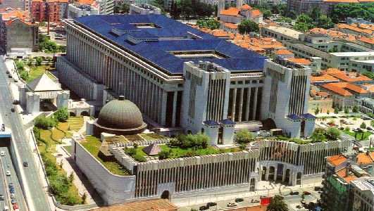

Accommodation 
EMNLP 2015 will take place at Culturgest. The closest subway station is Campo Pequeno, and there are also several bus stops nearby.
Several hotels are located within walking distance to Culturgest, in the vicinity of one of the most import avenues in Lisbon – Avenida da República. Lisbon’s downtown and the historical center can also be easily reached by subway.
- (1) Hotel Holiday Inn Continental (4-star) - $$
- (2) Hotel 3K Barcelona (4-star) - $$
- (3) Hotel Alif Campo Pequeno (3-star) - $
- (4) Hotel Vip Executive Zurique (3-star) - $
- (5) Hotel Vip Inn Berna (3-star) - $
The following map shows the locations for conference venue and for the different hotels that are listed on this page.
Other hotels
Besides the accommodation options detailed above, you can also choose to stay closer to Lisbon's downtown or historical areas, which have great accessibility to the conference venue, and may allow the participants to better enjoy Lisbon during their spare time.
Specifically for low-budget accommodation, Lisbon has some of the best hostels in the world right in the city center, ideal for student accommodation. Another alternative is AirBnB, which has several good alternatives for lodging in Lisbon.
Belem and Tagus river (Rio Tejo) area
The following hotels are located near the margin of the Tagus river. Important monuments of Lisbon are located within this area: Belem Tower (Torre de Belém), St. Jerome Monastery (Mosteiro dos Jerónimos) and the Discoveries Monument (Padrão dos Descobrimentos). Lisbon’s downtown is about 15-20 minutes away by bus or by tram.
- (1) Hotel Pestana Palace (5-star) - $$$
- (2) Hotel Jerónimos 8 (4-star) - $$$
- (3) Hotel Vila Galé Ópera (4-star) - $$$
Downtown (Baixa) area
The following hotels are located near the downtown part of the city, close to the Chiado shopping area. Other city locations, including the conference venue, can be easily accessed either by subway or buses, since this area is well covered by Lisbon’s public transportation network.
- (1) Internacional Design Hotel (4-star) - $$$
- (2) The Beautique Hotels Figueira (4-star) - $$$
- (3) Hotel Borges Chiado (3-star) - $$
Marquês de Pombal area
These hotels are located near the top of one of the most important streets of Lisbon – Avenida da Liberdade. Lisbon’s downtown is located at walking distance (10-20 minute walk, depending on the hotel). Other city locations, including the conference venue, can again be easily accessed either by subway or buses, since this area is well covered by Lisbon’s public transportation network.
- (1) Hotel Altis Lisboa (5-star) - Rua Castilho, 8 - $$$
- (2) Hotel Tivoli Lisboa (5-star) - Av. da Liberdade, 185 - $$$
- (3) Hotel Tivoli Jardim (4-star) - Rua Júlio César Machado, 7-9 - $$$
- (4) Hotel Marquês de Pombal (4-star) - Av. da Liberdade, 243 - $$$
- (5) Hotel Fénix Lisboa (4-star) - Praça Marquês de Pombal, 8 - $$$
- (6) Hotel Sana Lisboa (4-star) - Av. Fontes Pereira de Melo, 8 - $$
- (7) Hotel Fénix Garden (3-star) - Av. Joaquim António de Aguiar, 3 - $$
- (8) Hotel Miraparque (3-star) - Av. Sidónio Pais, 12- $